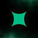

DeFi. Scale. Privacy. Resilience.
All four. All one stack.
How Starknet fixes it
Scalability over time
Bitcoin settles. Starknet scales.
Bitcoin's base layer is capped at around 7 transactions per second, by design, and that's a feature, not a bug: it keeps Bitcoin decentralized and secure as the settlement layer. But it means Bitcoin can't be the execution layer. Its fees are also unpredictable, spiking as high as ~$128 during the April 2024 halving. Starknet absorbs the execution: throughput climbing toward 10,000+ TPS while fees stay locked under $0.01, permanently.
strkBTC · privacy
Public by default. Private by choice.
strkBTC is the first Bitcoin-backed asset with optional privacy, built on STRK20s, Starknet's protocol-level privacy primitive. Same asset, two modes: access the full Starknet DeFi stack (lend, borrow, trade, stake) without broadcasting your positions, strategies and net worth to the entire world.
Track record
Built by an OG team. A decade of scaling breakthroughs.
This isn't a one-cycle experiment. Again and again, what StarkWare shipped became the standard the rest of the industry later adopted, from the first production of STARK technology to protocol-level privacy. Ten years of cryptographic firsts, now converging on Bitcoin.
The bridge roadmap
BTCFi-ready today. Fully trustless tomorrow.
Bitcoiners can already use the full DeFi stack on Starknet through a transparent, community-vetted federation. From there, every phase strips away trust assumptions, all the way to a fully trustless bridge once Bitcoin can verify STARK proofs natively.
Phase 1 — Now
Federation
strkBTC backed by a transparent federation: Near Intents, Xverse, Luganodes, Twinstakes, UTXO. Trust assumptions are explicit and public.
LivePhase 2 — Next
BitVM
Trust-minimized verification without fraud proofs. Only one honest party needed. Working with Alpen Labs on a BitVM-based bridge for Starknet.
In progressPhase 3 — Research
ColliderVM
Bitcoin-native stateful computation without fraud proofs. Same trust model as BitVM2 but capital-efficient: operators reimbursed immediately.
ResearchEndgame
OP_CAT
The endgame. If activated, Bitcoin could verify STARK proofs natively, enabling a fully trustless bridge. And this isn't theory: a proof-of-concept on a test environment with OP_CAT enabled (Bitcoin Signet) is already live and working.
EndgameThe BTCFi ecosystem
A complete DeFi stack. Built for Bitcoin.
Onboard from Bitcoin, Lightning or any EVM chain, then put BTC to work across the deepest Bitcoin-focused DeFi ecosystem in crypto: staking, lending, trading, liquidity, perps, yield. It's all live today.
Native BTC staking: a first for Bitcoin
Since September 2025, Bitcoin can be staked natively on Starknet to help secure the network and earn rewards. Not custodial lending. Not a yield farm. Starknet is the only network secured by a dual-token Proof-of-Stake consensus, where BTC and STRK stake together.
BTC carries 25% of consensus weight (monetary security), STRK carries 75% (network economics).
Because rewards come from protocol economics, this yield is sustainable and tied directly to STRK's economy: as more STRK is staked, and as STRK appreciates, BTC staking rewards grow with it.
Onboarding


DeFi protocols
Most capital-efficient AMM on the market.
 Vesu
Vesu
Lend BTC, borrow stablecoins, one-click loop strategies.
Best trading execution across Starknet. Private fee payments via Paymaster for strkBTC swaps.
Liquid BTC staking. Earn staking yield while staying liquid for DeFi.

ExtendedTrade perps with WBTC as collateral, or use stablecoins borrowed against BTC to generate yield.
 Troves
Troves
Advanced one-click DeFi strategies for Bitcoiners. Private vaults are live.
 Forge Yields
Forge Yields
Cross-chain yield strategies from Starknet, powered by Hyperlane.
Live on-chain
Bitcoin on Starknet, by the numbers.
BTC already at work on Starknet today. These figures are live and growing.